Contents
- Overview of PURLs
- Administering PURLs
- Administering Batches of PURLs
- Administering Users
- Administering Groups of Users
- Administering PURL Domains
- Creating RESTful PURL Clients
1. Overview of PURLs
PURLs are Persistent Uniform Resource Locators (URLs). A URL is simply an address on the World Wide Web. A Persistent URL is an address on the World Wide Web that points to other Web resources. If a Web resource changes location (and hence URL), a PURL pointing to it can be updated. A user of a PURL always uses the same Web address, even though the resource in question may have moved.
More information about PURLs may be found in a Brief Introduction to PURLs, a Long Introduction to PURLs, the PURL FAQ or Wikipedia. More information about URLs may be found at Wikipedia and in RFC 3986 from the Internet Engineering Task Force (IETF).
PURLs are themselves valid URLs. Figure 1 shows the parts of a PURL. The scheme part tells a computer program, such as a Web browser, which protocol to use when resolving the address. The host part tells which machine to connect to. The next part, the PURL domain, is analogous to a path in a URL. The domain is a hierarchical information space that separates PURLs and allows for PURLs to have different maintainers. Each domain may be administered by one or more designated maintainers. Finally, the PURL name is the name of the PURL itself. The domain and name together constitute the PURL's "id".

Figure 1. Parts of a PURL
PURLs are categorized into different types depending on how they respond to a request. Most PURLs simply redirect to a another URL (the "target" URL): Those are PURLs of type 302, because they respond to a request with an HTTP response code of 302, meaning that the object of the request was found elsewhere. PURLs may also respond with other HTTP response codes. Table 1 summarizes the different types of PURLs.
It is worth noting that there are some differing interpretations of the HTTP specification and hence some decisions were made in the implementation of PURLs. For example, an HTTP server may respond with a 404 response code if a resource is not found, if it is temporarily not present or if it simply does not want to provide it to a requester. We have chosen to think of a 404 as representing a temporarily gone status and using a 410 for those resources which are permanently not resolvable. Similarly, we have noted the need for a way to ground non-information resources into the World Wide Web and supported that concept with PURLs by suggesting that any resource addressed by a 303 PURL and returning a "See also URL" be explicitly considered not to be an information resource. This decision allows physical resources (such as your car) or conceptual resources (such as the idea of a car) to be given a PURL and referred to in a sharable manner (as when using Semantic Web techniques). Where a particular interpretation of the HTTP status code definitions differs from the way an HTTP response code is used by a PURL server, we suggest interpreting the intent of PURLs via the Meaning column in Table 1.
Table 1. Types of PURLs
| PURL Type | Meaning | HTTP Shorthand |
|---|---|---|
| 301 | Moved permanently to a target URL | Moved Permanently |
| 302 | Simple redirection to a target URL | Found |
| 303 | See other URLs (use for Semantic Web resources) | See Other |
| 307 | Temporary redirect to a target URL | Temporary Redirect |
| 404 | Temporarily gone | Not Found |
| 410 | Permanently gone | Gone |
PURL servers may be accessed either by a Web user interface or a public API. PURLs and their associated domains, users, groups of users and documentation may be reached by either method. Figure 2 shows the tabbed navigation options in the Web user interface.
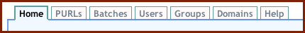
Figure 2. Tabbed Navigation in the Web User Interface
2. Administering PURLs
The single most important task that one can accomplish on a PURL server is the creation of a new PURL. Other administrative actions, from user, group or domain maintenance to the other operations on the PURLs themselves are secondary to that main task. This section addresses the creation of simple (HTTP redirection) PURLs and advanced PURLs, along with the other things that may be done to a PURL.
A "maintainer" is someone who can modify a PURL. A maintainer of a PURL may modify the record for that PURL. A user who creates a PURL is automatically added as a maintainer.
Six actions may be taken on a PURL: Creation, Advanced Creation, Modification, Searching, Validation or Deletion. These six actions may be accessed in the PURL Web user interface as shown in Figure 3. The same six actions may be taken by other PURL clients. See Creating RESTful PURL Clients for details.
Creating a simple or advanced PURL creates a record for that PURL on a PURL server. A simple PURL merely redirects to a given URL. An advanced PURL may return any of the HTTP response codes listed in Table 1, including the 303 response code used to return information about physical or conceptual resources. Modification allows the group record to be updated. Group records may be searched by the general public. Finally, group records may be deleted. These six actions are described in detail below.
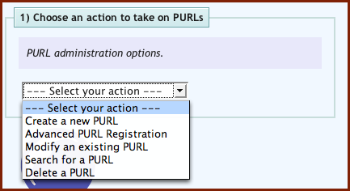
Figure 3. Actions on PURLs
2.1 Create a New PURL
Web User Interface
PURLs require a Domain to hold them. Domains have to be created before PURLs may be placed in them (see 6.1 Create a New Domain). Some PURL servers may automatically create domains for you when you create a PURL and others may require domains to be created separately.
Simple PURLs are always of type 302 (see Table 1 for information on PURL types). That is, resolving a simple PURL will always return an HTTP response code of 302 (Found) with a Location header specifying where the requester should seek the requested resource. Simple PURLs are thus a handy simplification of advanced PURLs to account for a common use case.
Simple PURLs may be created via the PURL Creation Form.
Figure 4(a) shows the creation of an example simple PURL. A target URL is the URL to which the PURL will redirect. A maintainer is a user or group authorized to administer a PURL. A user who creates a PURL is automatically added as a maintainer. Figure 4(b) shows a typical response upon success. Search results may be "torn off" for later use by selecting the icon labeled A in Figure 4(b). Individual records may be brought into the PURL Modification Form by selecting any of the icons labeled B in Figure 4(b).
In this case, a PURL will be created on a PURL server with the path "/zepheira/examples/BBC". If the PURL server was running on a machine called purlz.org, then the resolution of http://purlz.org/zepheira/examples/BBC would result in an HTTP 302 response directing the user (or Web browser, or other computer application) to look for the desired resource at http://bbc.co.uk/, the British Broadcasting Service's Web site. Three maintainers are listed for this PURL; the users "david" and "brian" and the group "examplegroup".


Figures 4(a) and 4(b). Creating a PURL
2.2 Create an Advanced PURL
Web User Interface
PURLs require a Domain to hold them. Domains have to be created before PURLs may be placed in them (see 6.1 Create a New Domain). Some PURL servers may automatically create domains for you when you create a PURL and others may require domains to be created separately.
Advanced PURLs may be created via the PURL Advanced Creation Form. Note that this form will adjust itself to gather the information required for the type of PURL that you select. Since simple (302) PURLs were covered in 2.1 Create a New PURL, the example given below illustrates a PURL of type 303.
Advanced PURLs may return any HTTP response code listed in Table 1. Of those, PURLs of types 302 (simple redirections) and 303 (information about non-informational resources) are the most common. Figure 5 shows the PURL type being selected in the Web user interface. The first six types are the entries from Table 1, as previously discussed. The last three (Clone, Chain or Partial-redirect) are special actions that require some additional information but eventually result in a PURL of one of the six types listed in Table 1. Cloning a PURL allows one to create a new PURL based on the record of an existing PURL. Chaining allows a PURL of type 302 to refer to another PURL (of any type) without the network overhead of a separate redirection.
Partial-redirect PURLs allow PURLs of type 302 to be created which refer to a directory level portion of a URL; any path information appended to a partial redirect PURL is in turn appended to its target URL. That allows a single PURL to redirect to a hierarchy on a target Web server.
There are four (4) types of partial-redirect PURLs: Partial, Partial-append-extension, Partial-ignore-extension and Partial-replace-extension. The plain Partial is simplest. Any string added to the end of a Partial PURL is appended to its target prior to redirection. For example, suppose we have a PURL with an id of 'http://localhost:8080/net/partialexample/' that redirects to a target of 'http://example.com/partialtest/'. If we then try to resolve the URL 'http://localhost:8080/net/partialexample/foo/bar/baz' we will find that an HTTP 302 message is returned that redirects us to the location 'http://example.com/partialtest/foo/bar/baz'. The "extra" path information added the end of the Partial PURL was added to the end of the target URL. Partial PURLs are treated as simple strings of characters, so any attempt to resolve a URL with a Query String on the end will also get appended verbatim to the target, like so: 'http://localhost:8080/net/partialexample/foo?bar=baz' will be redirected to 'http://example.com/partialtest/foo?bar=baz'.
A Partial-append-extension PURL is a type of partial-redirect a PURL that allows a file extension to be appended to the target URL at the time of the PURL's resolution. This is occasionally useful when creating partial-redirects to target systems that use file extensions to separate content types. The file extension to append to the target is given immediately after the PURL id. For example, consider a PURL of type partial-append-extension called 'http://localhost:8080/net/partialappendextension/' that has a target of 'http://example.com/partialappendtest/'. If you resolve the partial with some added path, say 'http://localhost:8080/net/partialappendextension/foo/bar/bam?id=fizzle', it will redirect to 'http://example.com/partialappendtest/bar/bam.foo?id=fizzle'. The file extension 'foo' is added to the PURL immediately after the PURL id and immediately before any additional path information. The file extension ('foo') is then stripped from the path and added to the end of the target URL after the path extension but before any Query String. Any Query String is appended to the end of the newly created target URL.
A Partial-ignore-extension PURL is a type of partial-redirect PURL that removes any file extensions from the path information used to create the target URL. For example, a PURL 'http://localhost:8080/net/partialignoreextension/' with a target of 'http://example.com/partialignoretest/' when called as 'http://localhost:8080/net/partialignoreextension/foo.html' would redirect to 'http://example.com/partialignoretest/foo'.
A Partial-replace-extension PURL is a type of partial-redirect PURL combines the functionality of the Partial-append-extension PURL and Partial-ignore-extension types. It ignores any file extension given in the PURL and appends a file extension provided in the PURL path. For example, a PURL called 'http://localhost:8080/record/' and a target of 'http://example.com/records/' when called as 'http://localhost:8080/record/htm/foo/bar.html' would redirect to a target of 'http://example.com/records/foo/bar.htm'.
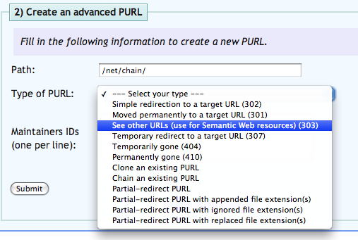
Figure 5. Selecting the Type of an Advanced PURL
Figure 6(a) shows the creation of an example advanced PURL. The PURL path shown is meant to suggest the form of deep hierarchy often found in real-world data. The example PURL is of type 303 (labeled in the pulldown menu as "See also URLs", which are used for resources which may not be directly accessible on the World Wide Web. Two maintainers are listed; a maintainer is a user or group authorized to administer a PURL. Finally, the "See also URL" itself is provided, which gives information about the addressed resource without it actually pretending to be the addressed resource, as would a response to a 301, 302 or 307 PURL. Figure 6(b) shows a typical response upon success.
 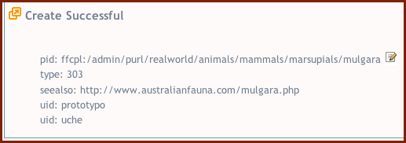
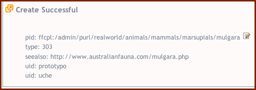
Figures 6(a) and 6(b). Creating an Advanced PURL
It is a common (and best) practice for PURLs of type 303 to refer to a document providing structured metadata about a physical or conceptual resource in Resource Description Format (RDF) syntax. The combined use of a PURL of type 303 and an RDF description assures the user that the addressed resource is truly not an information resource that may be represented on the World Wide Web, but instead something existing in the real world. Figure 6(c) shows the same example as Figure 6(a) but with a "See also URL" pointing to an RDF resource.

Figure 6(c). Directing a "See Also" (303) PURL to an RDF Document
2.3 Modify an Existing PURL
Web User Interface
Records for existing PURLs may be modified by completing the PURL Modification Form, which is much like the form for creating a new PURL. Figure 7(a) shows the PURL record created in 2.1 Create a New PURL being updated to remove the user "brian" and the group "examplegroup" as maintainers. Figure 7(b) shows a typical response upon success.
It may be tedious or even impossible to complete a modification form by hand. To reduce the need to do so, PURL records may be discovered by a search and the modification form automatically filled in with data from the current record. See 2.4 Search for PURL Information for more information.


Figures 7(a) and 7(b). Modifying a PURL
2.4 Search for PURL Information
Web User Interface
PURL records may be searched using the PURL Search Form, an example of which is shown in Figure 8(a). Records may be searched by PURL path (see Figure 1 for the definition of a PURL path), target URL, See Also URL or maintainer IDs. A target URL is a URL that a PURL of type 301, 302 or 307 redirects to (see the list of PURL types in 1. Overview of PURLs). A See Also URL is a URL that a PURL of type 303 refers to. A maintainer is a user or group authorized to administer a PURL. Two types of maintainer fields are used: "Maintainer IDs" expands groups into lists of users and "Explicit Maintainers" does not.
Figure 8(a) shows a sample search for PURLs maintained by the user "david" and Figure 8(b) shows a typical response. Search results may be "torn off" for later use by selecting the icon labeled A in Figure 8(b). Individual records may be brought into the PURL Modification Form by selecting the icon labeled B in Figure 8(b).
Tombstoned PURL records may be searched by selecting the checkbox labeled "Search tombstoned PURLs" in the PURL Search Form as shown in Figure 8(a). PURL records become tombstoned if they are deleted via the PURL Deletion Form. More information about tombstoning may be found under 1.6 Delete a PURL.


Figures 8(a) and 8(b). Searching for PURLs
2.5 Search for PURL's History
Web User Interface
Information regarding the changes to a PURL may be found using results from the PURL Form. Clicking on the history icon near each PURL record will launch a new window containing the history of changes for that PURL.
2.6 Validate a PURL
Web User Interface
A PURL validation service is provided to help you find PURLs which may be stale or no longer acting in the way that you intended. A PURL is validated by entering its PURL path into the PURL Validation Form as shown in Figure 9(a). Figure 9(b) shows a typical response upon success.
PURLs of type 301, 302, 303 and 307 either redirect or refer to other URLs (see the list of PURL types in 1. Overview of PURLs). When PURLs of those types are validated, the URL to which they refer will be resolved and the status code noted. A status code of 200 (OK) will result in a successful validation. Any other results (e.g. a 404, Not Found) will result in a failure of the validation and an error message will be returned.
Attempting to validate a PURL of type 404 or 410 will always return a successful validation indication baring server error.
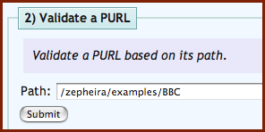 
Figures 9(a) and 9(b). Validating a PURL
2.7 Delete a PURL
Web User Interface
PURLs may be deleted by providing their PURL IDs to the PURL Deletion Form. PURLs may only be deleted if their PURL IDs are known. Please note that deleting PURL records actually results in them being "tombstoned" so that they do not become inaccessible. Instead, deleted PURLs will continue to exist on a PURL server but will be modified to return an HTTP 410 status code (Gone). Tombstoned PURL records may be searched by selecting the checkbox labeled "Search tombstoned PURLs" in the PURL Search Form as shown in Figure 10(a).
Figure 10(a) shows an example deletion request and Figure 10(b) shows a typical response upon success.
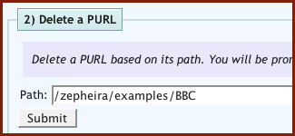 
Figures 10(a) and 10(b). Deleting a PURL
3. Administering Batches of PURLs
It is sometimes convenient to administer many PURLs at one time, especially if one is doing that programmatically or has a large number of PURLs under management. Batches of PURLs may be created or modified by submitting an XML document to a PURL server. XML documents submitted must comply with a RELAX-NG schema available from http://purlz.org/project/purl/documentation/batchPurls.rng. An example XML document is provided at http://purlz.org/project/purl/documentation/batchPurlsExample.xml.
No batch operations for searching or deletion are supported. This is due to the limitations of the Hypertext Transfer Protocol (HTTP) specification. It is not possible to provide an XML document in the body of an HTTP GET request (used for searches) nor in an HTTP DELETE request (used for deletion).
Similarly, no Web user interface has been provided for batch operations since AJAX techniques are prohibited from reading local filesystems for security reasons. The use of Javascript would be necessary to support HTTP PUT (used for modifications) because most Web browsers do not natively support that method. Those requiring the bulk deletion of PURLs are therefore encouraged to do so programmatically within an HTTP 1.1 session to minimize network overhead.
3.1 Create a Batch of PURLs
Batches of PURLs may be created by send an HTTP POST request to the RESTful API at http://$PURL_SERVER$/admin/purls. The input needs to be an XML document (see an example) using a RELAX NG Schema. The input XML file will be validated against the schema before processing by the PURL server.
3.2 Modify a Batch of PURLs
Batches of PURLs may be modified by send an HTTP POST request to the RESTful API at http://$PURL_SERVER$/admin/purls. The input needs to be an XML document (see an example) using a RELAX NG Schema. The input XML file will be validated against the schema before processing by the PURL server.
The input schema for batch modifications is the same as for batch creation.
Note that if you create a PURL using the type Clone you will be creating a new PURL that has the features of an existing PURL, so any attempt to modify the new PURL after creation will be possible but the PURL will show up with its type inherited from the cloned original (that is, it will not have the type "clone").
4. Administering Users
Four actions may be taken on a user: Registration, Modification, Searching or Deletion. These four actions may be accessed in the PURL Web user interface as shown in Figure 11. The same four actions may be taken by other PURL clients. See Creating RESTful PURL Clients for details.
Registering a user creates a record for that user on a PURL server and allows the user to create PURLs (subject to the security limitations of the PURL server and any restrictions on writing to specific domains). Modification allows the user record to be updated. User records may be searched by the general public, although private information is naturally withheld. Finally, user records may be deleted. These four actions are described in detail below.

Figure 11. Actions on Users
4.1 Register a New User
Web User Interface
Users have to be registered with a PURL server before they will be allowed to create or otherwise administer PURLs, participate in groups or administer domains. Individual PURL servers may have differing requirements for registering users. Some may allow users to register immediately and others may require a review process by a human being. Thus, sometimes a user registration request will complete immediately and in other cases experience a delay or a continuation to the process of registering that is separate to the PURL software (such as an email callback).
User registration may be requested via the User Registration Form.
Figure 12(a) shows an example user in the act of registration. Some PURL servers will require all fields to be completed and others may not care; that is a policy decision for the individual PURL server administrator.
Figure 12(b) shows a successful result for a user registration that completed immediately. Only public information is returned; the password, password hint and justification for registration are withheld. Note that for PURL servers that manually check user registration or rely on a callback mechanism (e.g. via email) that the message returned will be different. In those cases, the message returned might say something like "Your registration request has been sent to an administrator for review" or "A confirmation email has been sent to david@example.com. Please complete your registration by following the directions in that message."


Figures 12(a) and 12(b). Registering a User
4.2 Modify an Existing User
Web User Interface
Records for existing users may be modified by completing the User Modification Form, which is much like the form for registering a new user. Figure 13(a) shows the user record created in 4.1 Register a New User being updated with a new password. Figure 13(b) shows a typical response upon success.
It may be tedious or even impossible to complete a modification form by hand. To reduce the need to do so, user records may be discovered by a search and the modification form automatically filled in with data from the current record. See 4.3 Search for User Information for more information.

Figures 13(a) and 13(b). Modifying a User
4.3 Search for User Information
Web User Interface
User records may be searched using the User Search Form, an example of which is shown in Figure 14(a). Records may be searched by user name, affiliation (if collected upon user registration), email address or user ID.
Figure 14(a) shows a sample search for registered users affiliated with Zepheira and Figure 14(b) shows a typical response. Search results may be "torn off" for later use by selecting the icon labeled A in Figure 14(b). Individual records may be brought into the User Modification Form by selecting any of the icons labeled B in Figure 14(b).
Tombstoned user records may be searched by selecting the checkbox labeled "Search tombstoned users" in the User Search Form as shown in Figure 14(a). User records become tombstoned if they are deleted via the User Deletion Form. More information about tombstoning may be found under 4.4 Delete a User.
 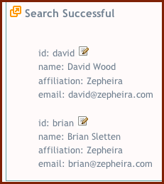
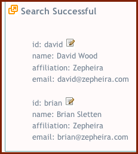
Figures 14(a) and 14(b). Searching User Records
4.4 Delete a User
Web User Interface
Users may be deleted by providing their user IDs to the User Deletion Form. Users may only be deleted if their user IDs are known. Please note that deleting user records actually results in them being "tombstoned" so that any PURLs they administer do not become inaccessible. Tombstoned user records may be searched by selecting the checkbox labeled "Search tombstoned users" in the User Search Form as shown in Figure 14(a).
Figure 15(a) shows an example deletion request and Figure 15(b) shows a typical response upon success.
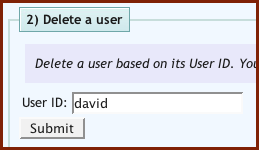 
Figures 15(a) and 15(b). Deleting a User
4.5 Logging into a PURL Server
Web User Interface
Users may perform some public actions (such as searching, validating and resolving) without being authenticated to the server. Administrative actions (such as creating or deleting PURLs, groups and domains) require a user to log into an previously created account.
A new PURL server is installed with a default user account called 'admin' with a password of 'password'. Administrators are naturally encouraged to change the default password immediately after installation.
New users may be registered by the public, but may have to be approved by an administrator prior to being used (if the server was so configured). Auto user registration (that is, without approval) can be turned on or off by commenting or uncommenting the term <allowUserAutoCreation> in the configuration file INSTALL_DIR/modules/mod-purl-admin/etc/PURLConfig.xml.
New users and top-level domains must be approved by an administrator if the <allowUserAutoCreation> option is not set. New users and top-level domains may be approved by logging in as an administrator and accessing the User Approval and Domain Approval pages.
5. Administering Groups of Users
It can be convenient to create groups of users to facilitate administration. For example, if you create a large number of PURLs and each PURL may be changed by the same list of people, it will be easier to create a single group to represent those people than to individually list all people as maintainers. A user who creates a group is automatically added as a maintainer.
Four actions may be taken on a group: Creation, Modification, Searching or Deletion. These four actions may be accessed in the PURL Web user interface as shown in Figure 16. The same four actions may be taken by other PURL clients. See Creating RESTful PURL Clients for details.
Creating a group creates a record for that user on a PURL server. Modification allows the group record to be updated. Group records may be searched by the general public. Finally, group records may be deleted. These four actions are described in detail below.

Figure 16. Actions on Groups
5.1 Create a New Group
Web User Interface
Groups may be created via the Group Creation Form.
Figure 17(a) shows the creation of a sample group. A maintainer is a user or group authorized to administer a group and a member is a user or group that is a member of this group. Figure 17(b) shows a typical response upon success.


Figures 17(a) and 17(b). Creating a Group
5.2 Modify an Existing Group
Web User Interface
Records for existing groups may be modified by completing the Group Modification Form, which is much like the form for creating a new group. Figure 18(a) shows the group record created in 5.1 Create a New Group being updated to remove the user "david" as a maintainer. Figure 18(b) shows a typical response upon success.
It may be tedious or even impossible to complete a modification form by hand. To reduce the need to do so, group records may be discovered by a search and the modification form automatically filled in with data from the current record. See 5.3 Search for Group Information for more information.


Figures 18(a) and 18(b). Modifying a Group
5.3 Search for Group Information
Web User Interface
Group records may be searched using the Group Search Form, an example of which is shown in Figure 19(a). Records may be searched by group name, group ID, maintainer ID or member ID. A maintainer is a user or group authorized to administer a group and a member is a user or group that is a member of the group.
Figure 19(a) shows a sample search for domains with a maintainer of "brian" and Figure 19(b) shows a typical response. Search results may be "torn off" for later use by selecting the icon labeled A in Figure 19(b). Individual records may be brought into the Group Modification Form by selecting the icon labeled B in Figure 19(b).
Tombstoned group records may be searched by selecting the checkbox labeled "Search tombstoned groups" in the Group Search Form as shown in Figure 19(a). Group records become tombstoned if they are deleted via the Group Deletion Form. More information about tombstoning may be found under 5.4 Delete a Group.
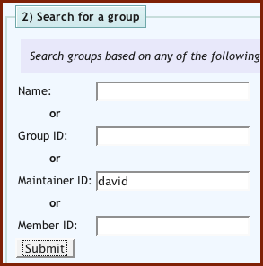 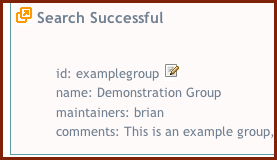
Figures 19(a) and 19(b). Searching for Group Information
5.4 Delete a Group
Groups may be deleted by providing their group IDs to the Group Deletion Form. Groups may only be deleted if their group IDs are known. Please note that deleting group records actually results in them being "tombstoned" so that any PURLs they administer do not become inaccessible. Tombstoned group records may be searched by selecting the checkbox labeled "Search tombstoned groups" in the Group Search Form as shown in Figure 19(a).
Figure 20(a) shows an example deletion request and Figure 20(b) shows a typical response upon success.
TODO: Web UI
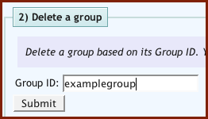 
Figures 20(a) and 20(b). Deleting a Group
6. Administering PURL Domains
PURLs are created within domains. A domain is the path portion of the PURL URL form, as shown in Figure 1. PURLs may not be created unless they are within a domain; that helps to ensure order and security on a PURL server.
A "maintainer" is someone who can modify a domain. A maintainer of a domain may modify the record for that domain. A "writer" is someone who may create a new PURL under a domain. A user who creates a domain is automatically added as a maintainer.
Some PURL servers allow one or more domains to act as public spaces. This is the case with the /NET domain on the oldest PURL server at http://purl.org/. Public domains allow for subdomains and PURLs to be created within them by the general public. Most domains, however, will be private and writing to them requires that you are either a maintainer or a writer of those domains.
Four actions may be taken on a domain: Creation, Modification, Searching or Deletion. These four actions may be accessed in the PURL Web user interface as shown in Figure 21. The same four actions may be taken by other PURL clients. See Creating RESTful PURL Clients for details.
Creating a domain creates a record for that domain on a PURL server. Note that the creation of top-level domains generally requires permission from a PURL server administrator and may not complete immediately. Modification allows the domain record to be updated. Domain records may be searched by the general public. Finally, domain records may be deleted. These four actions are described in detail below.

Figure 21. Actions on Domains
6.1 Create a New Domain
Web User Interface
Domains have to be created before PURLs may be placed in them. Some PURL servers may automatically create domains for you when you create a PURL and others may require domains to be created separately.
Domains may be created via the Domain Creation Form.
Figure 22(a) shows the creation of a sample domain. A maintainer is a user or group authorized to administer a domain and a writer is a user or group authorized to create PURLs within a domain. Figure 22(b) shows a typical response upon success.


Figures 22(a) and 22(b). Creating a Domain
6.2 Modify an Existing Domain
Web User Interface
Records for existing domains may be modified by completing the Domain Modification Form, which is much like the form for creating a new domain. Figure 23(a) shows the domain record created in 6.1 Create a New Domain being updated to remove the user "david" as a maintainer. Figure 23(b) shows a typical response upon success.
It may be tedious or even impossible to complete a modification form by hand. To reduce the need to do so, domain records may be discovered by a search and the modification form automatically filled in with data from the current record. See 6.3 Search for Domain Information for more information.


Figures 23(a) and 23(b). Modifying a Domain
6.3 Search for Domain Information
Web User Interface
Domain records may be searched using the Domain Search Form, an example of which is shown in Figure 24(a). Records may be searched by domain name, domain ID, maintainer ID or writer ID. A maintainer is a user or group authorized to administer a domain and a writer is a user or group authorized to create PURLs within a domain.
Figure 24(a) shows a sample search for an existing domain with the ID "examples" and Figure 24(b) shows a typical response. Search results may be "torn off" for later use by selecting the icon labeled A in Figure 14(b). Individual records may be brought into the Domain Modification Form by selecting the icon labeled B in Figure 24(b).
Tombstoned domain records may be searched by selecting the checkbox labeled "Search tombstoned domains" in the Domain Search Form as shown in Figure 24(a). Domain records become tombstoned if they are deleted via the Domain Deletion Form. More information about tombstoning may be found under 6.4 Delete a Domain.
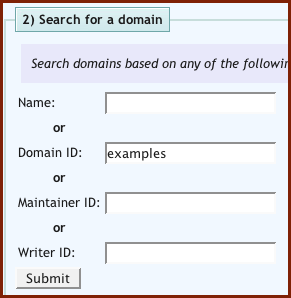 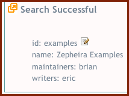
Figures 24(a) and 24(b). Searching for Domain Information
6.4 Delete a Domain
Web User Interface
Domains may be deleted by providing their domain IDs to the Domain Deletion Form. Domains may only be deleted if their domain IDs are known. Please note that deleting domain records actually results in them being "tombstoned" so that any PURLs they contain do not become inaccessible. Tombstoned domain records may be searched by selecting the checkbox labeled "Search tombstoned domains" in the Domain Search Form as shown in Figure 24(a).
Figure 25(a) shows an example deletion request and Figure 25(b) shows a typical response upon success.


Figures 25(a) and 25(b). Deleting a Domain
7. RESTful PURL Clients
Clients for PURL servers may be easily created using the available API. PURL servers expose services with an interface based on Representational State Transfer (REST) architecture. Examples of code in the Java programming language are provided for all PURL actions in the unit tests of the source code distribution. See particularly the file src/test/org/purl/test/simplePurlClient.java. That file used the RESTlet API to make calls to PURL servers. Additional illustrative code may be found in the JUnit tests located in src/test/org/purl/test/simplePurlClientTest.java and called from src/test/org/purl/test/purlClientTestRunner.java.